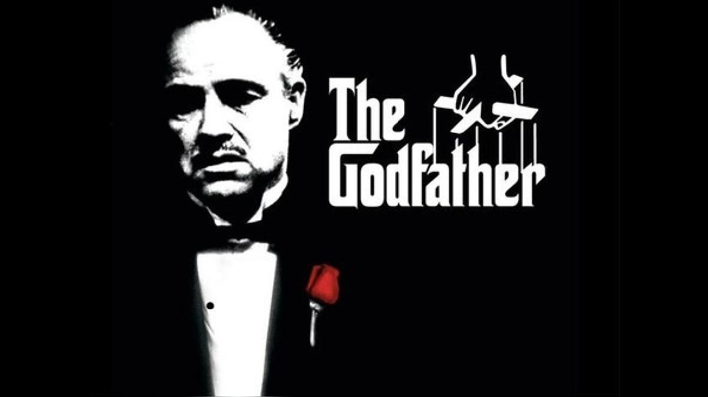
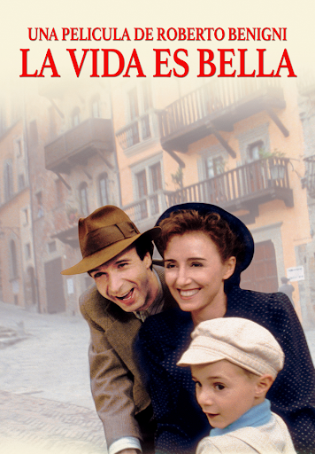
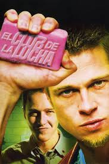

Pulp Fiction
Pulp Fiction (1994), dirigida por Quentin Tarantino, es una película icónica que entrelaza varias historias en el mundo criminal de Los Ángeles. Con un estilo no lineal, mezcla humor negro, violencia y referencias culturales pop. Las tramas incluyen a un par de asesinos a sueldo, un boxeador, la esposa de un mafioso y una pareja de delincuentes, cuyas vidas se cruzan de manera inesperada. Su guion, diálogos ingeniosos y personajes memorables, como Vincent Vega (John Travolta) y Jules Winnfield (Samuel L. Jackson), han convertido a Pulp Fiction en una obra maestra del cine independiente.
Personalmente detesto Pulp Fiction se me hace una reverenda porquería y eso que me gusta Quentin Tarantino. Prueba de ello es que amo las películas Django Desencadenado, Perros de Reserva y Malditos Bastardos. Entiendo como funciona el cine de Tarantino y algunas películas de el, me han hecho tocar el cielo. Pero esta película solamente la vi una vez se me hizo de muy mal gusto, grotesca, vulgar y con una violencia inecesaria. Además la descomposición de la trama en una trama no lineal hace que la película sea ininteligible, no le entendí nada lo que provoco que dormitara durante toda la película. Como mencione anteriormente, Tarantino alcanza su punto máximo en las películas anteriormente mencionadas pero está que es su película mas aclamada para mi gusto es la peor del director y la verdad una de las peores películas que he visto en mi vida.
| Pulp Fiction |
| Año: |
1994 |
| Director: |
Quentin Tarantino |
| País: |
Estados Unidos |
| Reparto: |
Jhon Travolta, Samuel L. Jackson, Bruce Willis, Uma Thruman, Ving Rhames |
| Premios Oscar: |
Mejor guion original |
| Mejores peliculas de la historia segun FA |
Posición 1 |
| Nota en FilmAffinity |
8.6 |
| Mi nota |
1 |
El padrino
El Padrino (1972), dirigida por Francis Ford Coppola y basada en la novela de Mario Puzo, es una de las películas más icónicas del cine. Ambientada en el mundo del crimen organizado, sigue a la poderosa familia Corleone, liderada por Don Vito Corleone (Marlon Brando), y su lucha por mantener su poder y legado en un entorno violento y traicionero. A través de una narrativa compleja y personajes inolvidables como Michael Corleone (Al Pacino), la película explora temas de poder, lealtad, traición y la transformación del protagonista en el despiadado sucesor de su padre. El Padrino se considera un clásico por su dirección magistral, actuaciones brillantes y su impacto en la cultura popular.
Personalmente el Padrino se me hace una película sobrevalorada. Quizas para su época haya sido muy importante, quizas no tenga los conocimientos cinefilos de la mayoría de la critica especializada y de la gente que la considera una de las mejores películas en la historia. Pero a mi se me hace una película aburridisima lista para ponerla cuando tengas insomnio, no me llamo la atención la historia se me hace el ritmo muy lento y la trama demasiado enrevasada he visto mejores películas e incluso he visto mejores películas de mafiosos como Erase una vez en América y Scarface. Me gusta la música de su película y reconozco que quizas me falta un nuevo visionado para encontrar sus virtudes que la ha de tener. Pero para mi no es la mejor película en la historia del cine ni siquiera entra dentro de mis 100 películas favoritas.
| El Padrino |
| Año: |
1972 |
| Director: |
Francis Ford Coppola |
| País: |
Estados Unidos |
| Reparto: |
Marlon Brando, Al Pacino, James Caen, Robert Duvall, Diane Keaton |
| 3 Premios Oscar: |
Mejor película, actor y guion adaptado |
| Mejores peliculas de la historia segun FA |
Posición 2 |
| Nota en FilmAffinity |
9.0 |
| Mi nota |
7 |

La vida es bella
La vida es bella (1997), dirigida y protagonizada por Roberto Benigni, es una conmovedora película ambientada durante la Segunda Guerra Mundial que combina drama y comedia para contar una historia sobre el poder del amor y la imaginación en medio del horror. La trama sigue a Guido, un hombre judío italiano, y su hijo, quienes son enviados a un campo de concentración nazi. Para proteger a su hijo del terror de su entorno, Guido transforma la realidad en un juego, haciendo todo lo posible por mantener la inocencia del niño. La película, reconocida por su mezcla de humor y tragedia, es un homenaje a la esperanza y al sacrificio paternal, ganando múltiples premios, incluido el Óscar a Mejor Actor para Benigni.
Para mi la vida es bella es una obra maestra absoluta y una de las mejores peliculas no solo del cine italiano sino tambien de la historia. Es una conmovedora historia que me hizo llorar a cantaros y no me la pude quitar de la cabeza por días. El mensaje que da es que el amor vence a todo, el amor de un padre por su hijo puede vencer incluso los horrores y el odio de una guerra. El mensaje es lo principal de esta película y es muy profundo que el amor vence a todo, el amor es lo principal el amor es lo mas importante. La vida depende de la óptica en la que tu mires y la si tu ves la la vida con ojos de amor y felicidad la vida así sera. Una obra maestra 10 de calificación
| La vida es bella |
| Año: |
1997 |
| Director: |
Roberto Benigni |
| País: |
Italia |
| Reparto: |
Roberto Benigni, Nicoleta Brasci,Giorgo Cantarini, Marisa Paredes, Giustino Durano |
| 3 Premios Oscar: |
Mejor película, pelicula de habla no inglesa y banda sonora |
| Mejores peliculas de la historia segun FA |
Posición 3 |
| Nota en FilmAffinity |
8.5 |
Mi nota |
10 |

-
El club de la pelea
El Club de la Pelea (1999), dirigida por David Fincher y basada en la novela homónima de Chuck Palahniuk, es una película que explora la alienación moderna, el consumismo y la crisis de identidad masculina. La historia sigue a un narrador anónimo (Edward Norton) que, insatisfecho con su vida corporativa y materialista, forma un club de peleas clandestino junto a Tyler Durden (Brad Pitt), un carismático y anárquico vendedor de jabón. A medida que el club crece, el narrador comienza a perder el control sobre la situación, lo que desemboca en una oscura y sorprendente revelación sobre la naturaleza de su relación con Tyler. La película es conocida por sus giros psicológicos, su crítica social mordaz y su estilo visual impactante.
En lo personal el Club de la Pelea me gusto pero tampoco se me hizo la gran cosa de la que todo el mundo esta hablando, de hecho se me hace un poco sobrevalorada. Aunque tengo que reconocer que Brad Pitt esta espactular en su papel de Tyler Durden, quizas sea el papel de su vida, Edward Norton tambien esta muy bien en su papel y se nota mucho la excelente dirección de David Fincher que en está pelicula consolida su estilo tan particular que lo ha hecho mundialmente famoso. Para mi lo mas flojo de la película es el guión todo se resume a un grupo de inadaptados sociales que se reunen en un lugar para darse de trancasos. No se me hace en nada sobresaliente ni tampoco le encuentro mucha profundidad a la historia como otras personas no las quieren vender. Aunque me gusto la película yo me quedo con Seven en donde también dirige David Fincher y actúa Brad Pitt.
| El club de la pelea |
| Año: |
1999 |
| Director: |
David Fincher |
| País: |
Estados Unidos |
| Reparto: |
Brad Pitt, Edward Norton, Helena Bonham Carter, Meat Loaf y Jared Leto |
| 1 Nominación al Oscar: |
Mejores efectos de sonido |
| Mejores peliculas de la historia segun FA |
Posición 4 |
| Nota en FilmAffinity |
8.1 |
Mi nota |
8 |

-
Sueños de fuga
The Shawshank Redemption (Sueños de Fuga en español) es una película de 1994 basada en una novela de Stephen King, dirigida por Frank Darabont. La historia sigue a Andy Dufresne, un banquero condenado injustamente a cadena perpetua por el asesinato de su esposa y su amante. Dentro de la prisión de Shawshank, Andy forma una amistad profunda con Red, otro prisionero, y utiliza su inteligencia y habilidades financieras para ganarse el respeto de los guardias y sus compañeros. La película explora temas como la esperanza, la redención y la resistencia frente a la adversidad, culminando en un escape extraordinario y una catarsis emocional.
A mi personalmente me encanto la película de Sueños de Fuga aunque a mi parecer está un pelín sobrevalorada. Reconozco que la película es excelente y te mueve fibras internas muy profundas mientras ves esa película pero en lo personal tengo otras películas que me gustan más. Pero eso no quita que la película sea impresionante, refleja el verdadero valor de la amistad varonil y en general la amistad humana y como en las peores condiciones simpre puedes encontrar la esperanza. La dirección pausada a ritmo clásico pero segura sabe a donde va llegando a un final en donde toda el peso de la película te aplasta y no queda mas remedio que emocionarte y ponerte de pie ante semejante obra maestra. Como lo dije es una obra maestra aunque no se encuentre dentro de mis 10 peliculas favoritas, aunque tampoco se encuentra muy lejos
| Sueños de fuga |
| Año: |
1994 |
| Director: |
Frank Darabont |
| País: |
Estados Unidos |
| Reparto: |
Morgan Freeman, Tim Robbins, Bob Gunton, James Whitmore y Gil Bellows |
| 7 Nominaciones al Oscar: |
Mejor película, mejor actor principal, mejor guion adaptado, mejor montaje, mejor fotografía, mejor banda sonora y mejor sonido |
| Mejores peliculas de la historia segun FA |
Posición 5 |
| Nota en FilmAffinity |
8.6 |
Mi nota |
10 |